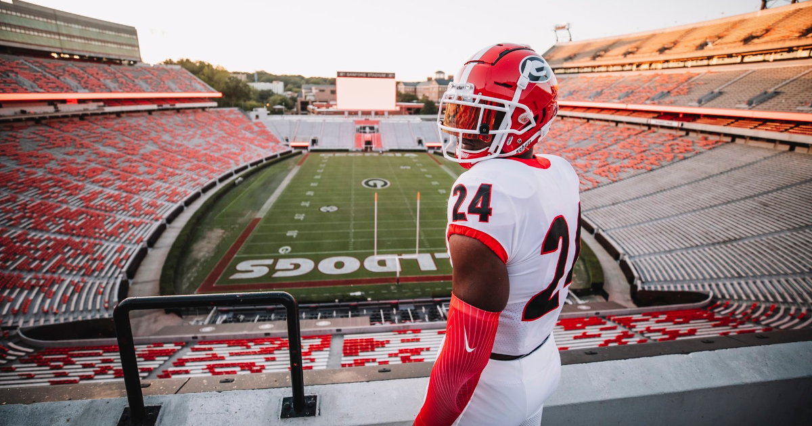

Geographic Trends in the World of College Football Recruiting
Over the recent years, the hobby of watching the college football recruitment process has gained almost as much momentum as watching the sport’s season itself. For any late high schooler, recruited athlete or not…